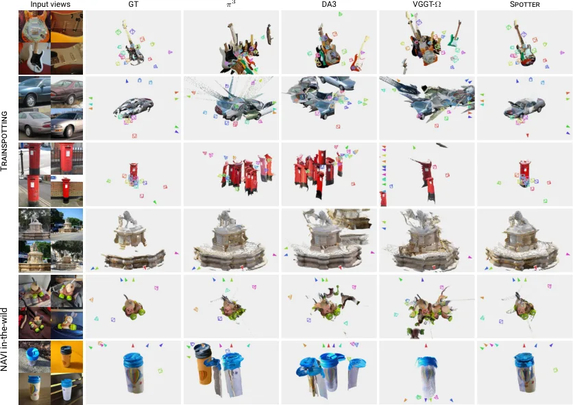
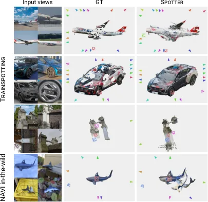
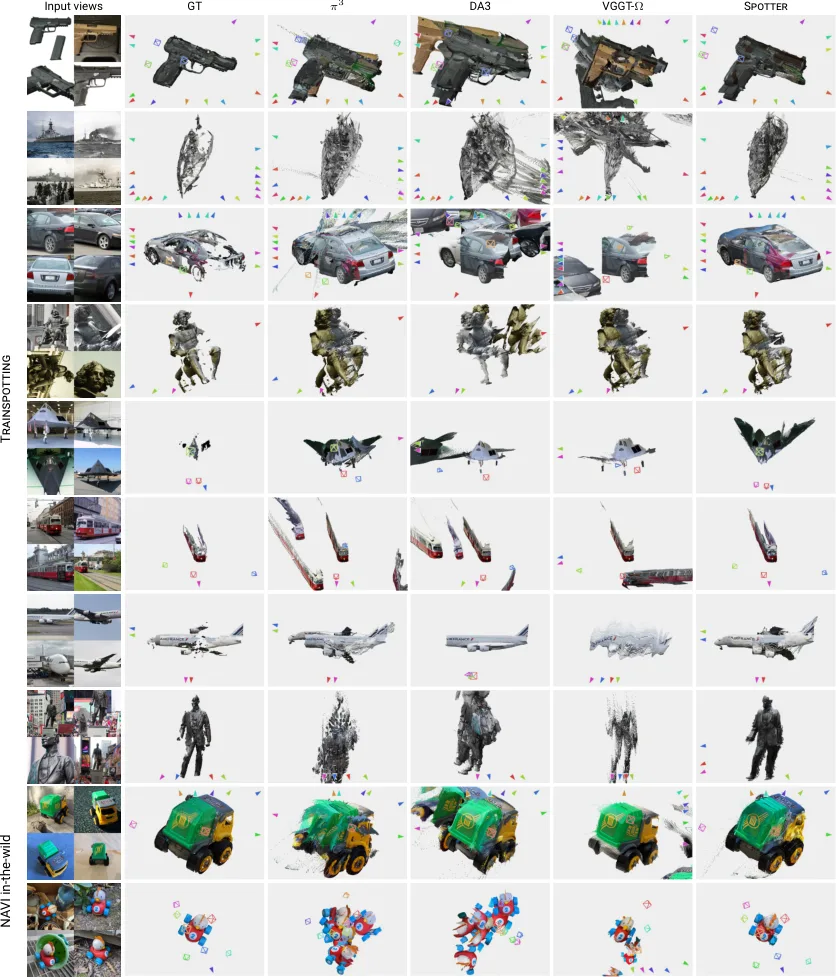
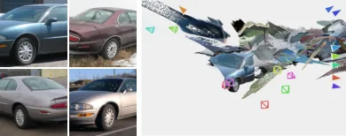
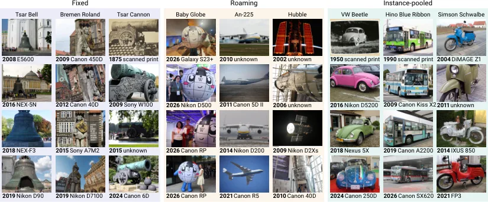

Trainspotting：从公共“偶遇照片”学习物体中心的三维重建
Trainspotting: Learning Object-Centric 3D Reconstruction from Found Photos
把“互联网老照片”变成物体级伪真值：LLM 分类 + SAM3 门控 + RoMa v2 稠密匹配（置信度/循环/对极三重校验）+ COLMAP 增量重建 + CasDiffMVS 与 MoGe-2 单目复核，得到 12,068 物体 / 311,886 张照片；再用它微调 1B 的 VGGT-Ω（808M 可训练参数）得到 Spotter。留出物体上相机位姿 AUC@30 从 25.0 升到 81.2，NAVI in-the-wild 从 18.8 升到 76.0，点图完整度在 Trainspotting 上从 12.68% 降到 1.15%，而 7-Scenes / NRGBD / DTU / ETH3D 的 AUC@30 变化不超过 1.1 点。
pose AUC@30
NAVI wild AUC@30
objects / photos
AUC@30 delta on standard benchmarks
作者、单位与技术谱系 · Research context
作者与单位
研究脉络
- Photo Tourism / Building Rome in a Day（Snavely et al., 2006/2009）团队前作关系：同一资深作者把“互联网上无序的多人照片”做成三维重建对象；本篇沿用这个前提，但把场景级换成物体级，并面对更强的环境变化。[论文 §2 与参考文献 [38]/[2]]
- MegaDepth（Li & Snavely, CVPR 2018）方法上游关系：第一次把“重建互联网照片 → 过滤 MVS 深度 → 监督单目深度”的配方跑通，本篇把同一配方扩到物体级并加了多模态复核。[论文 §2 与参考文献 [24]]
- MegaDepth-X / 长尾互联网照片重建（Li, Xiangli, Averbuch-Elor, Snavely, Cai, CVPR 2026）直接上游关系：最接近的前作：同样面对长尾 Commons 类别，改用 MASt3R-SfM 与重影消歧；但它只做场景级，且几乎不覆盖移动物体与多实体设计。[论文 §2、Table S3 与参考文献 [23]]
- VGGT-Ω（Wang et al., CVPR 2026）方法基座关系：被微调的主干与最强基线；本篇的贡献是数据与训练配方，不是新网络。[论文 §5.1 与 Table 3]
合作网络
- Hanyu Chen 与 Noah Snavely 的共同署名Hanyu Chen（Cornell） → Noah Snavely（Cornell）关系：共同署名（前作 Doppelgangers++, CVPR 2025）[论文参考文献 [58]]
- Cornell University 与项目主页Cornell University → hanyuc.com/trainspotting关系：官方项目页（单位与作者署名）[官方项目页]
- Trainspotting 对 Wikimedia Commons / Wikidata 的数据依赖Trainspotting 流水线 → Wikimedia Commons + Wikidata关系：数据来源依赖[论文 §3.1–§3.2]
作者、单位与项目页来自官方页面；研究脉络按参考文献与同作者作品整理，属“基于来源的解读”。未发现公开证据表明两位作者之外的机构参与，因此不补写实验室隶属或师生关系。
方法本质拆解 · What actually changed
是继续微调，不是从头训练
从已发布的 1B VGGT-Ω checkpoint 初始化，只解冻 24 层注意力与相机头（808M/1.14B 可训练），patch embedding、相机/register token 与深度头全部冻结。训练 7,500 步、每步 768 张图、四张 B200 约 12 小时，批内 15% 固定来自 BlendedMVS/Hypersim/uCO3D。物体掩码头是第二阶段单独训的小卷积头，不参与主指标。
约束加在数据与监督像素上
没有引入新的几何约束或坐标系条件，改动集中在“监督在哪里算”：深度与点损失只作用在有 MVS 深度的物体像素上，replay 样本才用全图真值；每个样本的相机与深度都表达在第一个视角的坐标系里，并按有效 3D 点到原点的平均距离归一化，预测侧用 DUSt3R 的方式做同样归一化。样本的 2–24 个视角必须构成共视连通集（一张图至少 5% 的物体点投影进另一张的掩码）。
推理没有新增后端
Spotter 就是一次前向：输入 2–24 张图，直接输出相机、深度与点图，没有全局 BA、没有分块合并、没有测试时优化。如果要用物体掩码，则再跑一次冻结主干加小掩码头，把点图限制在物体上；这部分不影响任何位姿/深度指标。换句话说，增益全部来自权重变化，而不是推理流程变化。
把“环境在变”从噪声变成训练信号
方法没有显式建模环境变化，而是让网络在大量“同物体、不同环境、不同相机、不同实体”的样本上反复看到同一几何在不同背景下的投影，从而学会忽略背景、抓住物体本身。Table 7 的 fixed-only 崩盘（roaming 58.0）说明这条因果链成立：网络缺的不是物体数量，而是同一物体在不同环境中的成像变化。它没有做的是：不建模物体的时间演化、不做跨实体的形状对齐、也不在推理时做任何几何校验。
输入 = 2–24 张无序物体照片 + VGGT-Ω 权重；改变的位置 = 注意力层与相机头（808M 参数）；约束/动作 = 用跨环境、跨实体、跨相机的伪真值做监督并混 15% 常规数据防遗忘；直接效果 = 跨环境物体位姿 AUC@30 从 25 提到 81，常规基准不掉。

结论与问题Conclusion & Motivation
核心结论
前馈重建模型在“同一个人群在不同年份、不同地点、用不同相机拍同一个物体”这类照片上会系统性失效，根因不是模型容量而是训练数据的采集方式太单一：现有物体数据集（CO3D、MVImgNet、uCO3D）都在一次拍摄里完成，环境几乎不变。Trainspotting 用 12,068 个物体、311,886 张 Wikimedia Commons 照片造出物体级伪真值，并据此微调 VGGT-Ω 得到 Spotter，在留出物体上把相机位姿 AUC@30 从 25.0 拉到 81.2，在完全独立的 NAVI in-the-wild 上从 18.8 拉到 76.0，同时常规基准（7-Scenes、NRGBD、DTU、ETH3D）的 AUC@30 变化不超过 1.1 点。最有信息量的结论来自消融：只用 fixed 物体训练（4,038 个）比用随机 20% 子集（2,193 个）还差 11.2 点，说明缺的是“拍摄环境的变化”，不是数据量。
动机与问题
经典 SfM 假设存在与同一刚体场景一致的重复对应，而公共档案里的物体照片恰恰破坏这个假设：环境在换（同一艘船在海上与在港内）、物体本身在变（重新喷漆、改装）、同一型号的不同实体单元在外观细节上也有差异，而且物体常常只占画面很小一块。已有的互联网照片数据集是场景级的：MegaScenes 用 COLMAP 重建 80k 个 Commons 类别，MegaDepth-X 用 MASt3R-SfM 加重影消歧重建长尾场景；Trainspotting 的 12,068 个物体里只有 1,163 个（9.6%）出现在 MegaScenes、56 个（0.5%）出现在 MegaDepth-X，且几乎全是固定在一处的雕像与纪念碑。于是问题变成两个：能否用自动流程为“移动物体”和“多实体设计”造出可信的位姿与深度，以及这些数据能不能真正提升前馈模型在跨环境照片上的泛化。
方法Method
方法总览
数据侧是一条五段流水线。第一段从 Wikidata 条目与 Commons 类别图枚举候选（遍历后 155,744 个类别），用 LLM 给每个类别打三个标签：是否为刚性物理对象、是个体还是设计、是否永久固定在一处，得到 33,884 个候选物体。第二段用 LLM 生成文本提示，交给 SAM3 做物体门控，只保留最大检测框覆盖画面至少 10% 的图像（17,470 个物体、1,251,986 张照片进入重建）。第三段用 MASt3R-SfM 的检索特征取每图 20 个近邻，用 RoMa v2 出稠密对应，再按置信度、循环一致性、对极距离三道检查过滤，合并邻近端点成共享关键点后送入 COLMAP 增量重建，并穷举合并分块结果取最大模型。第四段做视角选择与 MVS：只保留足够多长轨迹点的视角，按共视图谱二分并丢弃低电导小子图，用 CasDiffMVS 出深度，再用 MoGe-2 单目深度做球面滤波复核。第五段用 SAM3 掩码与深度覆盖率挑物体掩码，并做焦距与“主体占比”终检。模型侧很简洁：直接微调 VGGT-Ω，不改架构。
关键技术细节
流水线的固定阈值写得很完整，可直接复现：每图 20 个检索近邻、每对采样 8,000 个对应、置信度 τσ=0.20、循环距离 0.4% 图边、对极距离 0.1% 图边、关键点合并半径 0.2% 图边；视角选择要求至少 100 个长度≥3 的轨迹点且占三角化点 30% 以上，共视图谱二分在割电导低于 0.15 时丢弃小子图；MVS 用 6 个源视角、三阶段置信度 0.3/0.5/0.5，掩码需至少 200 个高置信 MVS 像素且 5% 以上有复核深度。训练侧只解冻 24 层 frame/global attention 与相机头，patch embedding、相机与 register token、深度头冻结，1.14B 参数里 808M 可训练；每个样本 2–24 个视角，每卡 192 张图的预算，损失是 5·L_cam + L_depth + L_point，深度损失带 1+1/D 权重并丢弃每批最大 2% 残差，批内固定 15% 来自 BlendedMVS/Hypersim/uCO3D 做 replay 以防遗忘；AdamW、峰值学习率 1e-5、余弦衰减到 1e-8、梯度裁剪 1、7,500 步，四张 B200 约 12 小时。物体掩码头是第二阶段单独训的小卷积头，冻结主干后在深度头融合特征上预测，留出物体上与数据集掩码的 IoU 为 0.92。

实验Experiments
实验设置
Trainspotting 按物体切分为 11,068 个训练物体（279,319 张）与 1,000 个留出物体（32,567 张），保证留出物体的任何照片都不出现在训练中；留出集上每个物体取一个 4 视角连通样本，照片足够的再取一个 16 视角样本，共 1,635 个样本。外部评测统一用每场景 8 视角：NAVI in-the-wild 得到 35 个样本、NAVI 单次采集 281 个样本，另加 7-Scenes、Neural RGB-D、DTU、ETH3D。指标有四项：相机位姿用所有视角对的相对旋转与平移方向误差取大者，报 AUC@5° 与 AUC@30°；深度报 AbsRel 与 δ<1.03 内点率（每个样本一个中位尺度）；点图报相似变换加 ICP 精化后的 accuracy 与 completeness（Trainspotting 上以物体尺度百分比表示，外部数据集用毫米）。对照是 VGGT、π³、Depth Anything 3、MapAnything、VGGT-Ω 五个已发布 checkpoint，全部同视角、同预处理。
实验数字与比较
主表（Table 3，Trainspotting 留出集）：VGGT-Ω 的 AUC@5/AUC@30 为 7.2/25.0、AbsRel 0.201、δ 28.1%、点图 1.84%/12.68%，Spotter 为 44.2/81.2、0.071、53.3%、1.22%/1.15%；最强基线 π³ 的 AUC@30 只有 46.4，点图完整度 6.22%。分 regime（Table 4）：VGGT-Ω 在 fixed 上是 56.7，但 roaming 只有 14.9、instance-pooled 只有 12.3；Spotter 分别为 79.0/81.0/82.6，且 16 视角样本（83.2）优于 4 视角（79.9），说明它确实在用多视角信息而不是单图先验。独立基准（Table 6）：NAVI in-the-wild 的 AUC@30 从 18.8 升到 76.0、AUC@5 从 3.8 升到 30.7，同时点图完整度从 20.4 mm 降到 1.9 mm（Table 5）；NAVI 单次采集 91.6→91.9，7-Scenes 87.2→86.1，NRGBD 97.9→97.3，DTU 98.5→97.7，ETH3D 91.8→91.8，最大跌幅 1.1 点，δ<1.03 最大变化 3.2 点。
消融/失败边界
Table 7 用同一配方训练 10 个 epoch 做数据消融：全量 11,068 个物体在留出集 AUC@30 为 80.3、NAVI in-the-wild 74.6；随机 20% 子集（2,193 个）仍有 79.7/72.3；但只用 4,038 个 fixed 物体时跌到 68.5/63.4，其中 roaming 只有 58.0——比一半数据量的随机子集还差 11.2 点。反向则成立：只用 roaming（2,603 个）或 pooled（4,427 个）训练，在 fixed 上仍有 76.5/75.6，说明跨环境样本是“包含关系”而非互斥。另一个必须一起读的边界是评测本身：Table S6 显示位姿错乱时相似变换会把预测缩到物体中心，VGGT-Ω 在 NAVI in-the-wild 上的对齐后尺度中位数只有 0.43（35 个物体里 28 个低于 0.7），Spotter 为 0.92（0 个低于 0.7）。所以位姿失败主要体现为完整度误差而不是精度误差，只看 accuracy 会低估问题。作者给的四个失败例是：长焦客机（深度噪声）、车轮特写（近景错配）、墓碑（重影歧义）、NAVI 玩具鲨（分布外）。
局限与迁移Limitations & Transfer
局限与待核验
作者明确承认的限制有两处：留出集分数是对着自家流水线产出的伪真值打的（因此他们额外用 NAVI in-the-wild 做独立验证），以及三种 regime 的标签来自 LLM 分类、只是近似。我们待核验的项目更多。第一，没有人工核验的位姿/深度子集，伪真值误差与模型误差无法分离；流水线的固定阈值（尤其 0.30 的 confirmed fraction 与 0.15 电导）在别的采集分布上是否需要重调，论文没有扫。第二，补充材料只用图 S1 定性比较了 SIFT、SuperPoint+LightGlue、MASt3R、MASt3R-SfM 四种匹配器，没有给出同一批物体上的位姿误差表，因此“我们的流水线更好”缺少定量对照。第三，失败分析是四张定性图，没有按 53 个类别或三种 regime 报失败率，因此无法判断哪类物体（例如透明、反光、对称）会被系统性筛掉。第四，时间变化被当作噪声处理：同一条船三十年间的改装不会建模，只要求它们能被配准到同一几何。第五，数据许可只写到“每张照片随源、作者与许可发布”，重建产物本身的再分发条款未在正文说明。
与你研究路线的关系
这条流水线本质上是一套“在没有真值的野外数据上造几何监督”的工程规范，和我们做多传感器/多会话数据集时的伪真值生成是同一件事：门控先剔除主体不明确的帧、稠密匹配提供跨视角对应、三重几何校验决定哪些对应可以进优化、MVS 出深度后再用单目深度复核、最后用掩码与焦距做终检。可直接迁移的模块有三个：RoMa v2 + 置信度/循环/对极三检查的匹配过滤（比单纯 RANSAC 更适合跨环境），共视图谱二分剔除弱连接视角（对我们多车多相机的 session 合并很实用），以及 15% replay 混合常规数据防止微调后遗忘。下一步实验可以拿我们自己的校园/车载跨 session 序列，按同一套门控与匹配流程生成物体级伪真值，再微调 VGGT-Ω 或 ViPE 一类主干，以 COLMAP + RoMa v2 的位姿为参照，测跨 session 的 AUC@30 与尺度漂移；同时把 replay 比例做成 0%/15%/30% 三档，检验“保住常规基准”到底需要多少常规数据。







